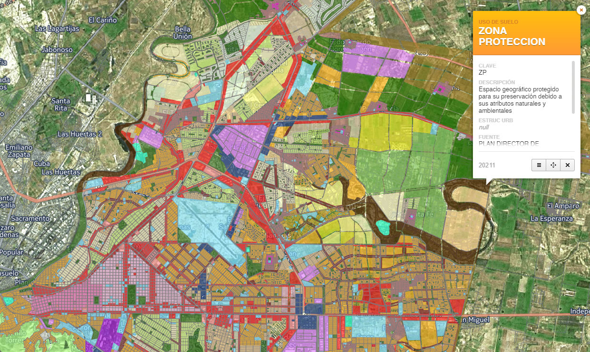

“Los planes no significan nada; la planeación significa todo”.
Dwight D. Eisenhower
¿Qué es la Planeación Urbana?
Es un proceso continuo y permanente de análisis de la situación actual y de previsión de los escenarios futuros para el desarrollo de los asentamientos humanos de tipo urbano (Rocha 2011).
¿Que es un Plan de Desarrollo Urbano?
- Documento técnico: Documento jurídico.
- Analiza componentes urbanos: Fija restricciones a la propiedad.
- Plantea objetivos y políticas: Identifica compatibilidad de usos.
- Define estrategia de largo plazo: Establece densidades y alturas.
- Establece zonas: Delimita derechos de vía.
Programa acciones prioritarias: Protege áreas naturales
Identifica y dimensiona los problemas de una ciudad.
- Prevé los requerimientos urbanos futuros.
- Propone una estrategia acordada para el crecimiento de la ciudad a largo plazo.
- Define prioridades de atención.
- Guía a autoridades y particulares para modificar la ciudad con orden, sustentabilidad y equidad.
¿Quiénes están obligados a cumplir los planes?
- Todos los propietarios y usuarios de los inmuebles que se encuentren dentro de las áreas determinadas por el Plan de Desarrollo Urbano:
- Propietarios y usuarios privados.
- Propietarios y usuarios públicos: municipales, estatales, federales y paraestatales.
- Propietarios y usuarios sociales: ejidatarios y comuneros.

La planeación urbana tiene mucho que aportar al desarrollo nacional.
Las ciudades (especialmente las estratégicas) de México deben funcionar adecuadamente como lugares para vivir y como lugares para producir.
Esta premisa (principal) es imprescindible hoy en las ciudades del país ya que estas son los motores potentes que impulsan el desarrollo nacional y regional.
Actualmente la concentración de la población, el empleo y la producción en las ciudades es evidente. La proporción de población urbana del país es de alrededor del 77.8 %, mientras que la población rural sólo representa el 22.2 %(INEGI 2010) el empleo registra una concentración urbana de 78 %. En el caso del Estado de Coahuila la aportación al PIB nacional es del 3%, por Industrias Manufactureras, destaca la producción de maquinaria y equipo.
Por ello la importancia de adoptar una perspectiva estratégica que genere conocimiento e insumos de planeación realmente útiles, como lo han hecho las ciudades de Aguascalientes, León Guanajuato, ó Chihuahua, por mencionar algunas, al establecer una Planeación que les lleve a funcionar como lugares para vivir y producir en armonía con el entorno natural y social.
Referencias
- http://datos.bancomundial.org/indicador/SL.AGR.EMPL.ZS/countries
- http://cuentame.inegi.org.mx/poblacion/rur_urb.aspx?tema=P